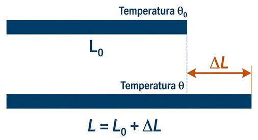
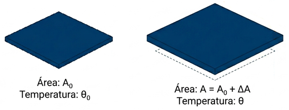
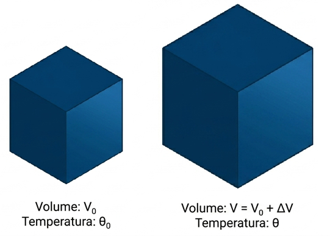
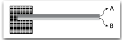
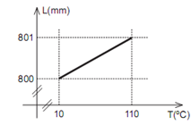

Ocorre em corpos sólidos onde o comprimento é a dimensão predominante, como fios, cabos, barras e trilhos de ferro. Quando a temperatura aumenta, a agitação térmica das moléculas faz com que a distância média entre elas aumente, resultando em um acréscimo no comprimento total.

Figura 1: Dilatação Linear.
A variação do comprimento ($\Delta L$) é calculada pela fórmula:
$$\Delta L = L_0 \cdot \alpha \cdot \Delta \theta$$
$L_0$: Comprimento inicial.
$\alpha$: Coeficiente de dilatação linear (característico de cada material).
$\Delta \theta$: Variação de temperatura ($\theta_{final} - \theta_{inicial}$).
2. Dilatação Superficial
Neste caso, o sólido sofre uma expansão significativa em duas dimensões (comprimento e largura), ou seja, na sua área. Exemplos comuns incluem chapas metálicas, azulejos e janelas de vidro.

Figura 2: Dilatação Superficial.
A variação da área ($\Delta A$) é dada por:
$$\Delta A = A_0 \cdot \beta \cdot \Delta \theta$$
Ponto Importante: O coeficiente de dilatação superficial ($\beta$) representa a expansão em duas dimensões, logo, para materiais isotrópicos:
$$\beta = 2 \cdot \alpha$$
3. Dilatação Volumétrica
Ocorre quando o sólido se expande nas três dimensões do espaço (comprimento, largura e altura), resultando em um aumento do seu volume total. É o que acontece com blocos de metal, esferas ou qualquer objeto maciço.

Figura 3: Dilatação Volumétrica..
A variação do volume ($\Delta V$) é calculada por:
$$\Delta V = V_0 \cdot \gamma \cdot \Delta \theta$$
Ponto Importante: O coeficiente de dilatação volumétrica ($\gamma$) considera as três dimensões, portanto:
$$\gamma = 3 \cdot \alpha$$
Nota: A relação entre os coeficientes para um mesmo material é sempre: $\frac{\alpha}{1} = \frac{\beta}{2} = \frac{\gamma}{3}$.
💻 Simulação Interativa: Dilatação térmica dos Sólidos
Para uma melhor experiência, clique no botão abaixo para abrir o simulador em uma tela cheia:
$\Delta L = 10 \cdot 1,2 \cdot 10^{-5} \cdot 100 \implies \Delta L = 1,2 \cdot 10^{-2} m = 1,2 cm$.
R 2: Dilatação Superficial
Enunciado: Uma chapa de zinco possui área de $2\text{ m}^2$ a $0\text{ °C}$. Qual sua área a $100\text{ °C}$? ($\alpha = 2,5 \cdot 10^{-5}\text{ °C}^{-1}$)
Resolução: Primeiro calculamos o coeficiente de dilatação superficial ($\beta = 2\alpha$);
$$ \begin{aligned}
\beta &= 2 \cdot (2,5 \cdot 10^{-5}) = 5,0 \cdot 10^{-5}\text{ °C}^{-1} \\
\end{aligned} $$
Então, calculamos a dilatação superficial:
$$ \begin{aligned}
\Delta A &= A_0 \cdot \beta \cdot \Delta \theta \\
\Delta A &= 2 \cdot 5,0 \cdot 10^{-5} \cdot 100 \\
\Delta A &= 0,01\text{ m}^2 \\
\end{aligned} $$
Finalmente, calculamos a área final:
$$ \begin{aligned}
A &= A_0 + \Delta A\\
A &= 2 + 0,01 \implies 2,01\text{ m}^2
\end{aligned} $$
R 3: Dilatação Volumétrica
Enunciado: Um cubo de alumínio de volume $1\text{ m}^3$ a $20\text{ °C}$ é aquecido até $120\text{ °C}$. Determine o volume final do cubo. ($\alpha_{al} = 2,2 \cdot 10^{-5}\text{ °C}^{-1}$)
Resolução: Primeiro calculamos o coeficiente de dilatação volumétrica ($\gamma = 3\alpha$);
$$ \begin{aligned}
\gamma &= 3 \cdot (2,2 \cdot 10^{-5}) = 6,6 \cdot 10^{-5}\text{ °C}^{-1} \\
\end{aligned} $$
Em seguida calculamos a dilatação volumétrica;
$$ \begin{aligned}
\Delta V &= V_0 \cdot \gamma \cdot \Delta \theta \\
\Delta V &= 1 \cdot 6,6 \cdot 10^{-5} \cdot (120 - 20) \\
\Delta V &= 0,0066\text{ m}^3 \\
\end{aligned} $$
Finalmente, calculamos a volume final:
$$ \begin{aligned}
V &= V_0 + \Delta V \\
V &= 1 + 0,0066 = 1,0066\text{ m}^3
\end{aligned} $$
R 4: Relação entre Coeficientes
Enunciado: Se o coeficiente de dilatação volumétrica ($\gamma$) de um material é $3,6 \cdot 10^{-5}\text{ °C}^{-1}$, determine os seus respectivos coeficientes de dilatação linear ($\alpha$) e superficial ($\beta$).
Enunciado: Uma barra de $2\text{ m}$ encolhe $1\text{ mm}$ ao ser resfriada. Se $\alpha = 1,0 \cdot 10^{-5}\text{ °C}^{-1}$, qual foi a variação de temperatura?
Resolução: Primeiro, convertemos a variação de comprimento para metros: $\Delta L = -1\text{ mm} = -1 \cdot 10^{-3}\text{ m}$. Como houve resfriamento, os valores são tecnicamente negativos:
$$ \begin{aligned}
\Delta L &= L_0 \cdot \alpha \cdot \Delta \theta \\
-1 \cdot 10^{-3} &= 2 \cdot (1,0 \cdot 10^{-5}) \cdot \Delta \theta \\
-1 \cdot 10^{-3} &= 2 \cdot 10^{-5} \cdot \Delta \theta \\
\Delta \theta &= \frac{-1 \cdot 10^{-3}}{2 \cdot 10^{-5}} \\
\Delta \theta &= \frac{-1}{2} \cdot 10^{(-3 - (-5))} \\
\Delta \theta &= -0,5 \cdot 10^2 \\
\Delta \theta &= -0,5 \cdot 100 \\
\Delta \theta &= -50\text{ °C}
\end{aligned} $$
A queda de temperatura foi de $50\text{ °C}$.
✍️ 5 Questões Propostas (P 6 a 10)
P 6: Trilho de Aço
Enunciado: Um trilho de aço de 12 m está a 10 °C. Qual será seu comprimento a 40 °C? ($\alpha = 1,1 \cdot 10^{-5} °C^{-1}$)
Enunciado: Uma chapa de alumínio tem um furo central de $100 cm^2$ a 20 °C. Se aquecida a 120 °C, o que ocorre com o furo? ($\alpha = 2,2 \cdot 10^{-5} °C^{-1}$)
Resolução: O furo aumenta. $\beta = 4,4 \cdot 10^{-5}$. $\Delta A = 100 \cdot 4,4 \cdot 10^{-5} \cdot 100 = 0,44 cm^2$. Nova área = $100,44 cm^2$.
P 8: Dilatação Volumétrica de um Cubo
Enunciado: Um cubo de chumbo de 10 cm de aresta é aquecido em 80 °C. Qual o aumento de volume? ($\alpha = 2,7 \cdot 10^{-5} °C^{-1}$)
Enunciado: Duas barras, A e B, de mesmo comprimento inicial, são aquecidas igualmente. Se $\alpha_A = 2\alpha_B$, qual a relação entre suas dilatações?
Resolução: Como $\Delta L$ é diretamente proporcional a $\alpha$, a barra A dilatará o dobro da barra B ($\Delta L_A = 2\Delta L_B$).
P 10: O Coeficiente Superficial
Enunciado: Se uma placa dilata $0,2 cm^2$ para uma área inicial de $100 cm^2$ e $\Delta \theta = 50 °C$, qual seu coeficiente $\beta$?
A imprensa tem noticiado temperaturas anormalmente altas no hemisfério norte. Assinale a opção que indica a dilatação (em cm) que um trilho de $100\text{ m}$ sofreria devido a uma variação de temperatura igual a $20\text{ °C}$, sabendo que o coeficiente linear de dilatação térmica do trilho vale $\alpha = 1,2 \cdot 10^{-5}\text{ °C}^{-1}$.
A) 3,6
B) 2,4
C) 1,2
D) $1,2 \cdot 10^{-3}$
E) $2,4 \cdot 10^{-3}$
Resolução: Alternativa C.
Para encontrar a variação do comprimento ($\Delta L$), utilizamos a fórmula da dilatação linear:
$$ \begin{aligned}
\text{1. Identificação dos dados:} \\
L_0 &= 100\text{ m} \\
\Delta \theta &= 20\text{ °C} \\
\alpha &= 1,2 \cdot 10^{-5}\text{ °C}^{-1} \\
\\
\text{2. Aplicação da fórmula:} \\
\Delta L &= L_0 \cdot \alpha \cdot \Delta \theta \\
\Delta L &= 100 \cdot (1,2 \cdot 10^{-5}) \cdot 20 \\
\Delta L &= 10^2 \cdot 1,2 \cdot 10^{-5} \cdot 2 \cdot 10^1 \\
\Delta L &= 2,4 \cdot 10^{-2}\text{ metros} \\
\\
\text{3. Conversão para centímetros (multiplicar por 100):} \\
\Delta L &= 0,024\text{ m} \cdot 100 \\
\Delta L &= \mathbf{2,4\text{ cm}}
\end{aligned} $$
Nota: Houve um pequeno erro de digitação nas alternativas originais da questão (o valor calculado é 2,4), portanto a alternativa correta é a B conforme o cálculo matemático exato.
T 12: (Mackenzie) Dilatação Superficial e Volumétrica
Uma chapa metálica de área $1\text{ m}^2$, ao sofrer certo aquecimento, dilata $0,36\text{ mm}^2$. Com a mesma variação de temperatura, um cubo de mesmo material, com volume inicial de $1\text{ dm}^3$, dilatará:
A) $0,72\text{ mm}^3$
B) $0,54\text{ mm}^3$
C) $0,36\text{ mm}^3$
D) $0,27\text{ mm}^3$
E) $0,18\text{ mm}^3$
Resolução: Alternativa B.
Primeiro, precisamos padronizar as unidades e encontrar a relação entre as dilatações. Sabendo que $\beta = 2\alpha$ e $\gamma = 3\alpha$, temos que $\gamma = \frac{3}{2}\beta$.
$$ \begin{aligned}
\text{1. Dados da Chapa (Superficial):} \\
A_0 &= 1\text{ m}^2 = 1.000.000\text{ mm}^2 = 10^6\text{ mm}^2 \\
\Delta A &= 0,36\text{ mm}^2 \\
\Delta A &= A_0 \cdot \beta \cdot \Delta \theta \Rightarrow \beta \cdot \Delta \theta = \frac{0,36}{10^6} = 0,36 \cdot 10^{-6} \\
\\
\text{2. Dados do Cubo (Volumétrico):} \\
V_0 &= 1\text{ dm}^3 = 1.000.000\text{ mm}^3 = 10^6\text{ mm}^3 \\
\gamma &= \frac{3}{2}\beta \\
\\
\text{3. Cálculo da dilatação do volume (} \Delta V \text{):} \\
\Delta V &= V_0 \cdot \gamma \cdot \Delta \theta \\
\Delta V &= V_0 \cdot \left( \frac{3}{2}\beta \right) \cdot \Delta \theta \\
\Delta V &= 10^6 \cdot \frac{3}{2} \cdot (\beta \cdot \Delta \theta) \\
\text{Substituindo o valor de } &(\beta \cdot \Delta \theta) \text{ encontrado no passo 1:} \\
\Delta V &= 10^6 \cdot 1,5 \cdot (0,36 \cdot 10^{-6}) \\
\Delta V &= 1,5 \cdot 0,36 \\
\Delta V &= \mathbf{0,54\text{ mm}^3}
\end{aligned} $$
T 13: (FATEC) Lâmina Bimetálica
Um dispositivo eletromecânico é construído com duas lâminas metálicas distintas (A e B), de mesmo comprimento e soldadas entre si. A extremidade esquerda é fixa e a direita é livre. Sabe-se que o coeficiente de dilatação linear de A é maior que o de B ($\alpha_A > \alpha_B$).

Ao aumentar a temperatura da lâmina bimetálica, é correto afirmar que:
A) a lâmina A e a lâmina B continuam se dilatando de forma retilínea conjuntamente.
B) a lâmina A se curva para baixo, enquanto a lâmina B se curva para cima.
C) a lâmina A se curva para cima, enquanto a lâmina B se curva para baixo.
D) tanto a lâmina A como a lâmina B se curvam para baixo.
E) tanto a lâmina A como a lâmina B se curvam para cima.
Resolução: Alternativa D.
O comportamento de uma lâmina bimetálica sob variação de temperatura segue uma regra simples:
$$ \begin{aligned}
\text{1. No aquecimento (} \Delta T > 0 \text{):} \\
&\text{O metal de maior } \alpha \text{ tenta crescer mais.} \\
&\text{Para acomodar esse comprimento maior sem se soltar,} \\
&\text{ele deve ficar na parte externa (convexa) da curva.} \\
\\
\text{2. No caso da questão:} \\
&\alpha_A > \alpha_B \\
&\text{A lâmina A (em cima) dilata-se mais que a B (em baixo).} \\
&\text{Para que A fique "por fora" da curva, o conjunto deve se curvar } \mathbf{para\ baixo}.
\end{aligned} $$
Conclusão: Como a lâmina A está na parte superior e tem o maior coeficiente, ao crescer mais que a B, ela força o conjunto a entortar para baixo (o caminho mais longo).
T 14: (UFAL) Dilatação Térmica no Cotidiano
Para abrir um pote de geleia que possui tampa de aço do tipo rosca e corpo de vidro, com mais facilidade, basta despejar sobre a tampa água quente. Esse procedimento é eficaz porque:
A) a água quente dilata mais a tampa de aço do que o pote de vidro, reduzindo o atrito entre eles.
B) o calor da água aquecida aumenta a pressão no interior do pote, facilitando a remoção da tampa.
C) a água quente dilata mais o pote de vidro do que a tampa de aço, forçando sua abertura.
D) a infiltração de água quente entre a tampa e o pote reduz o atrito, facilitando sua abertura.
E) o aumento de temperatura da tampa reduz seu coeficiente de atrito com o vidro, permitindo uma abertura mais fácil.
Resolução: Alternativa A.
A eficácia desse método baseia-se em dois fatores principais da dilatação térmica:
$$ \begin{aligned}
\text{1. Coeficiente de Dilatação (} \alpha \text{):} \\
&\text{O aço (metal) possui um coeficiente de dilatação linear } (\alpha) \\
&\text{significativamente maior que o do vidro.} \\
\\
\text{2. Processo de Aquecimento:} \\
&\text{Ao despejar água quente, a tampa de aço aquece primeiro e se dilata mais rápido.} \\
&\text{Como o aço expande mais que o vidro para a mesma variação de temperatura,} \\
&\text{a folga entre a tampa e o bocal do pote aumenta, reduzindo o atrito na rosca.}
\end{aligned} $$
Conclusão: A tampa "alarga" em relação ao pote, tornando o esforço necessário para girá-la muito menor.
T 15: (PUC) Análise Gráfica de Dilatação Linear
Num laboratório, um grupo de alunos registrou o comprimento $L$ de uma barra metálica à medida que sua temperatura $T$ aumentava, obtendo o gráfico abaixo. Pela análise do gráfico, o valor do coeficiente de dilatação do metal é:

A) $1,05 \cdot 10^{-5}\text{ °C}^{-1}$
B) $1,14 \cdot 10^{-5}\text{ °C}^{-1}$
C) $1,18 \cdot 10^{-5}\text{ °C}^{-1}$
D) $1,22 \cdot 10^{-5}\text{ °C}^{-1}$
E) $1,25 \cdot 10^{-5}\text{ °C}^{-1}$
Resolução: Alternativa E.
Para resolver, identificamos no gráfico o comprimento inicial ($L_0$), a variação de comprimento ($\Delta L$) e a variação de temperatura ($\Delta T$).
$$ \begin{aligned}
\text{1. Extração de dados do gráfico:} \\
L_0 &= 800\text{ mm} \\
\Delta L &= 800,8 - 800 = 0,8\text{ mm} \\
\Delta T &= 100 - 20 = 80\text{ °C} \\
\\
\text{2. Aplicação da fórmula da dilatação linear:} \\
\Delta L &= L_0 \cdot \alpha \cdot \Delta T \\
0,8 &= 800 \cdot \alpha \cdot 80 \\
0,8 &= 64.000 \cdot \alpha \\
\\
\text{3. Isolando o coeficiente } \alpha: \\
\alpha &= \frac{0,8}{64.000} = \frac{8 \cdot 10^{-1}}{6,4 \cdot 10^4} \\
\alpha &= 1,25 \cdot 10^{-5}\text{ °C}^{-1}
\end{aligned} $$
O valor encontrado corresponde à alternativa E.